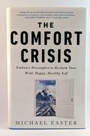

Library › Self-Improvement
The Comfort Crisis — Summary & Key Lessons

Embrace discomfort to reclaim your wild, happy, healthy self — why everything easy is making us miserable.
📖 OPEN THE FULL INTERACTIVE BREAKDOWN →🌐 Read it in Hindi, Hinglish, Gujarati, Tamil & 22 more languages — free, with audio.
💡 The Big Idea
Modern life deleted the discomforts that built humans — temperature swings, hunger gaps, heavy carrying, silence, boredom, mortality-awareness — and the deletion is the disease: comfort-saturated populations report record anxiety, obesity and meaninglessness, because the brain's PROBLEM CREEP (prevalence-induced concept change) redefines ever-smaller inconveniences as crises when real ones vanish. Easter's journey — a month hunting caribou in the Alaskan Arctic wrapped around the science — yields a counter-manual: the MISOGI (one giant annual challenge with ~50% failure odds — kayak the strait, run the unrunnable distance — with two rules: make it really hard, don't die; its job is recalibrating your entire difficulty scale), deliberate BOREDOM (the un-phoned mind wanders into default-mode creativity and self-processing; 'be bored better' is a productivity tool wearing rags), HUNGER as practice (most eating is boredom/emotion; occasional real hunger re-teaches the difference and the metabolism), RUCKING and carrying (humans are built to haul — the most underused, spine-safe strength stimulus), NATURE DOSING (the 20-5-3 rule: 20 min in a park 3x/week, 5 hours of semi-wild monthly, 3 days off-grid yearly — measurable cortisol and rumination drops), and MEMENTO MORI, Bhutan-style (thinking of death daily correlates with MORE happiness and sharper priorities, not gloom). Comfort was never the goal; capability was — and capability only grows on the far side of the crisis comfort tries to prevent.
🧠 The 6 Key Lessons
Lesson 1: Problem Creep: Why Easy Lives Feel Hard
Parts 1-2
Harvard's prevalence studies found the bug: show people fewer threatening faces, and they start classifying NEUTRAL faces as threats — the brain keeps its alarm-quota constant by inflating smaller triggers. Scale it up: ancestors' problems (predators, famine, exposure) got engineered away, and the alarm system re-aimed at emails, delayed flights and mild awkwardness — objectively tiny inputs producing subjectively real panic. Comfort, in other words, doesn't calm the threat-detector; it RETUNES it to absurd sensitivity. The exit isn't more comfort (the treadmill's whole trick) but voluntary contact with REAL difficulty: genuine cold, genuine effort, genuine risk-of-failure resets the scale so daily frictions re-shrink to their actual size. Every hard thing you do buys down the alarm on a hundred easy things.
📖 Example: Easter's Arctic month is the living experiment: 33 days hunting caribou in backcountry Alaska — real cold, real hunger, real navigation stakes, a pack heavier than office life allows. On return, the transformation wasn't muscle: airport delays, work… Read the full example →
⚡ Do this: Schedule one REAL discomfort this month — a rain hike, a cold-water swim, a 24-hour fast, an overnight without shelter comforts — and immediately after, journal what current 'problems' shrank. That felt shrinkage is the treatment working.
Lesson 2: The Misogi: One Epic, Doubtful Challenge a Year
Part 2
Borrowed from a Japanese purification ritual, the modern misogi (via performance guru Marcus Elliott) is an annual identity-stress-test: choose something so hard you have ~50% odds of failing — swim the open-water distance, ruck the mountain in a day, row the 100k — train toward it, attempt it alone-ish and unphotographed (rule zero: it's not content), obeying the two laws: make it really hard; don't die. Its mechanism isn't fitness, it's EVIDENCE: one completed (or honorably failed) misogi rewrites your self-model — 'the me who did THAT can obviously handle THIS' — and the rewrite generalizes to careers, conflicts and crises for the whole year. The 50% failure odds are the active ingredient: guaranteed-success events (marathons with pacers and gel stations) build memories; genuinely doubtful ones build identity. Kids' version included: Elliott's daughter's misogi — a mile ocean swim at dawn — chosen and owned by her; the family religion is capability.
📖 Example: Elliott's NBA-star clients carrying 85-lb stones underwater across a bay, Easter's own Arctic ordeal, and the everyman cases: the office worker whose misogi was rucking 50km in a day — he failed at 41km, called it the best failure of his adult life, and… Read the full example →
⚡ Do this: Design your misogi now: one challenge this year with honest ~50% odds (distance, water, mountain, endurance craft), two rules enforced, no social posting. Put the date in the calendar and reverse-engineer 12 weeks of preparation. Failure counts as completion.
Lesson 3: The Daily Doses: Boredom, Hunger, Carrying, Nature, Death
Parts 3-5
Between annual misogis, five micro-practices keep the recalibration: (1) BOREDOM — unphoned queues, walks and waits let the default-mode network run (the mind-wandering state where self-processing and creativity live; studies: people chose electric shocks over 15 minutes alone with thoughts — that's the atrophy, not the nature); (2) HUNGER — untangle appetite from emotion with occasional real gaps (most 'hunger' is boredom with a fridge); (3) CARRY — rucking (walking with a loaded pack) is the ancestral cardio-strength hybrid: knee-safer than running, spine-loading like nothing at the gym, scalable from groceries to mountains; (4) NATURE by prescription — 20-5-3: twenty minutes thrice weekly in any green space (cortisol drops), five hours monthly in semi-wild, three days yearly off-grid (the '3-day effect': creativity +50% in wilderness-immersion studies); (5) DEATH DAILY — Bhutan's cultural practice (contemplate mortality multiple times daily) correlates with the happiness rankings, and lab versions (mortality reflection) reliably boost gratitude and re-sort priorities: the deadline makes the life. None require gear, money or mountains — they require only tolerating, on purpose, what the comfort economy spends billions helping you avoid.
📖 Example: Easter's Bhutan chapters close the loop: a nation institutionalizing death-awareness (art, festivals, the expectation to contemplate it daily) while reporting profound contentment — his khenpo interviewee laughing at the Western strategy of not mentioning… Read the full example →
⚡ Do this: Install the weekly stack: 3 phone-free 20-minute outdoor walks (boredom + nature), one carried (start 10% bodyweight in a backpack), one 14-16 hour eating gap, and one line in your journal each morning: 'this could be the last ordinary Tuesday.' Review the anxiety baseline in 30 days.
Lesson 4: Eat Like Your Genes Expect: The Scarcity Brain Preview
Parts 4-5: Hunger, Gear, and the Wild Diet
Easter's food chapters attack comfort's most intimate delivery system: the modern eating environment. The mechanism is evolutionary mismatch — humans are built for CALORIC UNCERTAINTY (feast irregularly, move constantly, occasionally go without), but engineered food (hyper-palatable, always within reach, zero effort to acquire) hijacks the exact scarcity circuits that kept ancestors alive: we eat without hunger, snack to regulate mood, and have outsourced satiety to package sizes. His field corrections, tested in the Arctic where every calorie was earned: eat REAL single-ingredient food most of the time (processing, not macros, is the main lever — ultra-processed food drives ~500 extra daily calories in controlled studies), let genuine hunger visit before some meals (hunger is information, not an emergency — the gap teaches the difference between appetite and habit), front-load protein and eat slower than feels natural (satiety signals need 20 minutes you never give them), and EARN some meals through movement — the ancestral sequence (effort, then food) that modern life runs exactly backward. None of it is a diet; all of it is re-installing the friction that food was designed to have.
📖 Example: The Arctic month as nutrition lab: 33 days where food was caribou, dried rations, and whatever effort could carry — no snacking (nothing to snack on), real hunger before meals, every calorie hauled on his own back. Easter's data on himself: body composition… Read the full example →
⚡ Do this: Run the two-week mismatch reset: (1) one genuine hunger gap daily (let it arrive 30-60 minutes before you eat — observe it like weather), (2) 80% single-ingredient foods (shop the produce/meat/grain edges), (3) one earned meal weekly — a long ruck or workout that ENDS at the table. Track pleasure, not just weight: the steak after the mountain is the entire thesis.
Lesson 5: The Rest-Digest Connection: Why Stress Can Be Your Best Friend
Part 3: The Physiology
Easter's counterintuitive science chapter: the stress response isn't the enemy — it's the body's ancient performance system, designed to be switched ON for challenges and OFF for recovery. The crisis of comfort is that we've eliminated the challenges while keeping the stress (from screens, news, status anxiety) — leaving the system permanently half-on, which is what actually damages health. The fix isn't zero stress; it's the rhythm: deliberate physical and psychological challenges (cold, exertion, fasting, hard goals) that train the body to handle stress and switch off properly afterward. The 'rest-digest' state (parasympathetic) is where recovery happens — and you can only access it after the 'fight-flight' has been genuinely exercised. The hard thing isn't avoiding stress; it's finding the right stress.
📖 Example: Easter describes how modern soldiers and executives alike suffer from the same absence: not too much hardship, but too little of the RIGHT hardship — their stress systems are over-stimulated by noise yet under-trained by challenge, producing anxiety without… Read the full example →
⚡ Do this: Add one deliberate physical challenge to your week — cold shower, a hard workout, a long walk in heat or rain — followed by a genuine rest period. Train the stress switch to turn off.
Lesson 6: The 20-Second Rule of Discomfort: Make the Hard Choice the Easy One
Part 4: The Practice
Easter's practical habit design: the reason we don't do the uncomfortable things (work out, call people, go outside) is activation energy — and the fix is rearranging the environment so the hard choice takes less than 20 seconds to start. The workout clothes laid out the night before, the phone charger in another room, the walking shoes by the door — each removes the micro-friction that kills good intentions. The converse applies to bad habits: make them cost 20 seconds more (delete the app, hide the snacks, block the site). Behavior change is less about willpower than about friction design — the 20-second rule exploits the same psychology that makes comfort so sticky, but in reverse. Design the environment once; the discipline then runs on autopilot.
📖 Example: Easter describes how he made cold showers and morning runs nearly automatic by removing every barrier the night before — the towel, the clothes, the alarm across the room — until the decision to skip required MORE effort than the decision to do. The… Read the full example →
⚡ Do this: Pick one hard habit you keep skipping and one bad habit you keep repeating. This week, engineer both: remove one friction from the good habit (prep it tonight) and add one friction to the bad (hide it, delete it, block it).
✅ 5-Step Action Plan
- Buy down problem creep: one genuinely hard physical thing per month.
- Book your misogi — 50% odds, two rules, zero audience.
- Practice boredom daily: queues, walks and waits without the phone.
- Ruck weekly and dose nature on the 20-5-3 schedule.
- Think about death once a day — Bhutan's happiness tax, free of charge.
⚠️ When This Doesn't Work
Easter's 'discomfort makes you stronger' is true for bodies and wrong for balance sheets — Solyndra is the comfort-crisis story inverted: a company that embraced the hard path — revolutionary solar technology, ambitious manufacturing, risk-loving founders — and still collapsed with $535 million of taxpayer money, because discomfort without market fit is just expensive suffering. The book's heroism can romanticise struggle itself. Struggle is only training when the direction is right; otherwise it's a treadmill with excellent marketing.
💀 The Graveyard Proves It
☀️ Solyndra — The $535M Bet Against Falling Prices. Burn: $1.2B private + $535M govt loan. Read the full case study →
💬 Best Quotes from The Comfort Crisis
- “We are living progressively sheltered, sterile, temperature-controlled, overfed, underchallenged, safety-netted lives.”
- “A misogi asks: what am I actually capable of?”
- “Problem creep: when we experience fewer problems, we don't become more satisfied. We just lower our threshold for what counts as a problem.”
Interactive version: mark lessons as read, listen in your language, share quote cards.